（分単位）
00:01
00:00
00:00
00:00
pccページのリクエストURL末尾のコード23桁を入力してください
ブリッジ検索APIが廃止されたため、IPアドレスを直接入力してください。
Hue公式アプリの設定＞マイブリッジ＞ネットワーク設定＞DHCPをOFFにするとIPアドレスが表示されます。
算出したの時刻の表示タイプを指定できます
ソラのトケイ画面に入力されたメッセージを表示できます
「ささやき」の表示方法を設定できます。
有効にすると、使用時に画面の明るさを最大に変更します。
